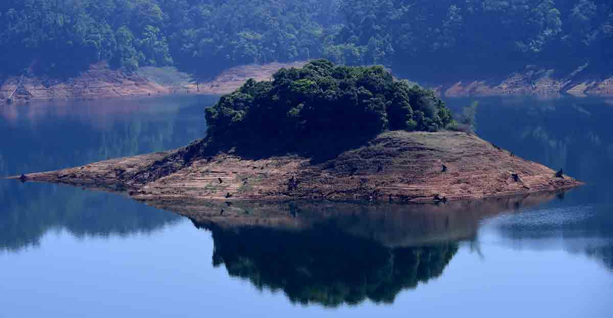

Gavi
One of the most beautiful places in India, Gavi is a small village tucked between tea estates and wide and dense forests. A unique project in itself, the place is a model of eco-tourism site bringing to the world its spellbinding abundance in flora and fauna. Gavi is situated some 14 km away from the famed Periyar Tiger Reserve and is heaven on Earth, quite literally.

Konni Forest Reserve
This place is considered to be the equivalent to an elephant's cage. The reason being is that the main attraction of the region is a massive wooden cage where elephant are trained.